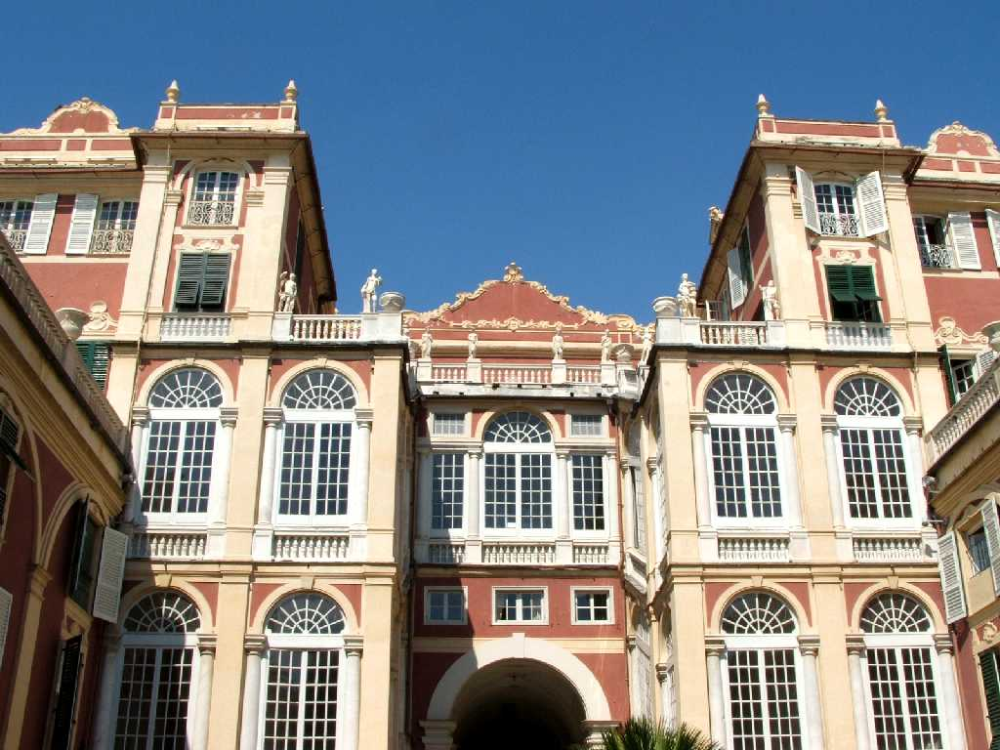
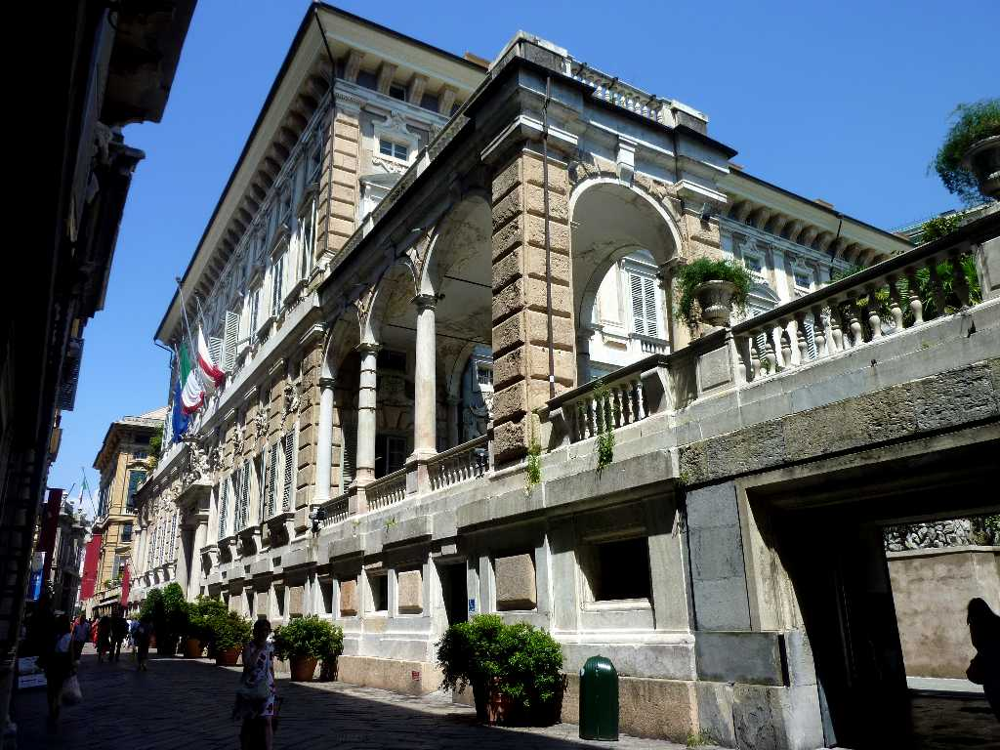
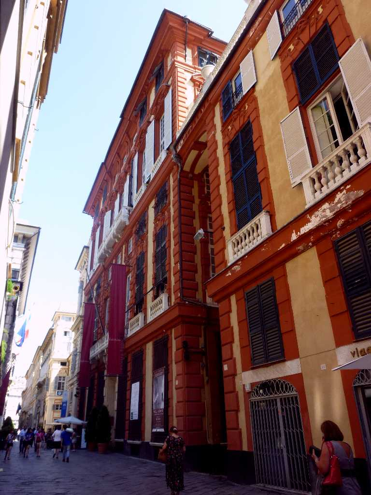
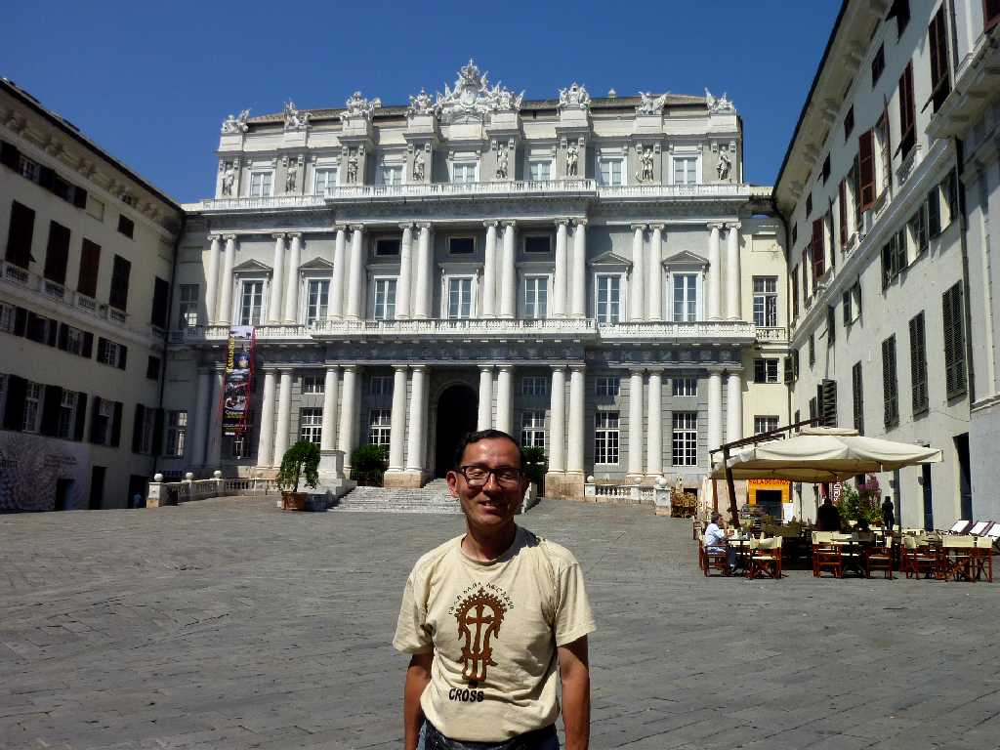
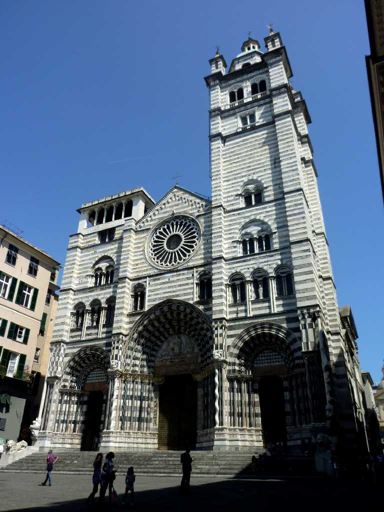
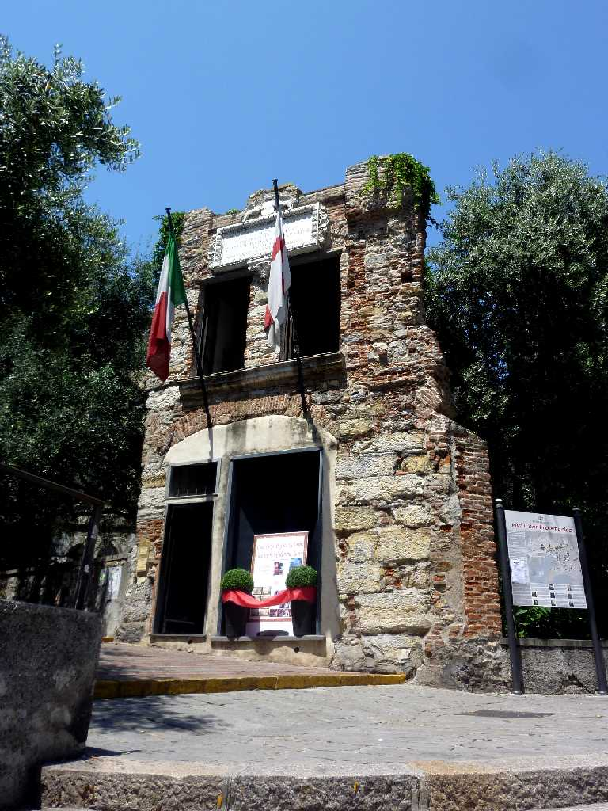
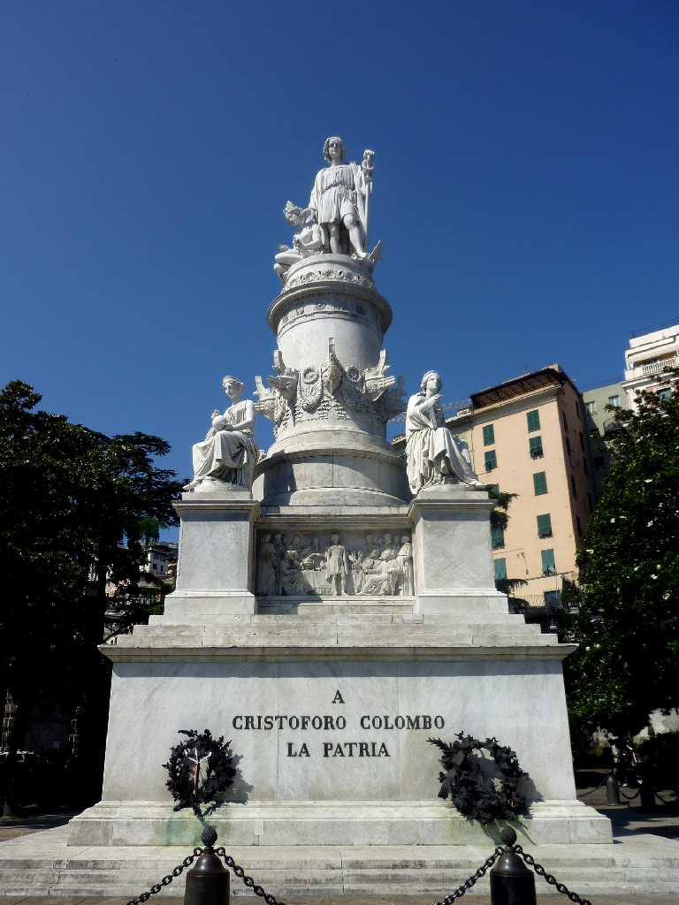

Palazzo Reale Genova
地中海の四大海洋都市国家(ジェノヴァ ヴェネツィア ピサ アマルフィ)の一つとして栄え商工業金融業軍港として発展し華麗なる都市との異名があった 現在もミラノやトリノの工業製品の輸出入港として北イタリアの地中海交易の拠点となっている

Via Garibaldi Palazzo Doria Tursi Palazzo Bianco
海洋都市国家として栄えた１６世紀の中心街で宮殿や商人の邸宅等が建ち並ぶガリバルディ通りはイタリアで最も美しい通りと云われている

Via Garibaldi Palazzo Bosso

July 5 2011 Palazzo Ducale

Cattedrale di San Lorenzo

La Casa di Cristoforo Colombo
コロンブスが青年期を過ごした家で１５世紀の海洋都市国家ジェノヴァで育ちスペインに渡りアメリカ大陸を発見する